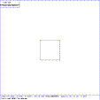
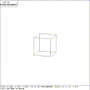
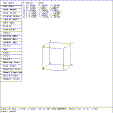

 Figure (es8-top): Top View of ARB8
This section illustrates the use of commands while in SOL EDIT state to alter the shape of a polyhedron with six sides and 8 faces (ARB8).
$mged es.g
BRL-CAD Release 3.0 Graphics Editor (MGED) Compilation 82
Thu Sep 22 08:08:39 EDT 1988
mike@video.brl:/cad/.mged.4d2
es.g: No such file or directory
Create new database (y|n)[n]? y
attach (nu|tek|tek4109|ps|plot|sgi)[nu]? sgi
ATTACHING sgi (SGI 4d)
Untitled MGED Database (units=mm)
mged> in arb8 rpp -1 1 -1 1 -1 1
mged> size 10
mged>
Figure (es8-top) is a top view of the six-sided polyhedron. The Z-axis perpendicular to the viewing screen. Next, the view is rotated so that all sides can be seen.
mged> Twist ROTY knob clockwise and restore
mged> Twist ROTX knob counter-clockwise and restore
mged>
 Figure (es8-rot): A Rotated View of the ARB8
Figure (es8-rot) shows a better perspective of the solid.
The next step in this tutorial is to transfer to the solid edit state. This can be accomplished in two ways: either by going through the SOL PICK state (``illuminate mode'') or by direct transfer via keyboard command. Using illuminate mode is better when the name of the solid to be edited may not be known, while the keyboard command is generally preferred when the name of the solid is known.
mged> Select the ``Solid Illum'' entry in the button menu
mged> Move the mouse out of the menu area
mged> Click the mouse to enter SOL EDIT state
mged>
To perform a direct transfer from the viewing state to the solid edit state using a keyboard command, enter:
mged> sed arb8
mged>
 Figure (es8-sed): An ARB8 in Solid Edit State
Figure (es8-sed) corresponds to the view on the display. The ARB8 MENU is unique to the ARB primitive, and lists operations that can only be performed on an ARB solid. The items in the ARB8 MENU are selected by using the mouse. Each of the other types of solids have a similar unique menu. When one of these items is selected, the top level ARB8 MENU disappears, to be replaced with the indicated subordinate menu. The top-level menu reappears when either the ``edit menu'' item in the SOLID EDIT menu is selected, or the ``RETURN'' item in the subordinate menu is selected.
The SOLID EDIT menu applies to all solids when in the SOL EDIT state. The items in the SOLID EDIT menu are selected by either using the mouse or by depressing the appropriate button on the button box. When any of the SOLID EDIT menu items are selected (eg, ``Rotate'', ``Translate'', ``Scale''), the solid-specific menu disappears. Th top-level solid-specific menu reappears when the ``edit menu'' item in the SOLID EDIT menu is selected.
The p [params] command is used to make precise changes, where the numeric value of the parameter being edited is know. Values for all parameters in the ARB8 and SOLID EDIT menus can be specified by using the p command, or by pointing and clicking with the mouse.
{kind=link}
{kind=link}
{kind=link}